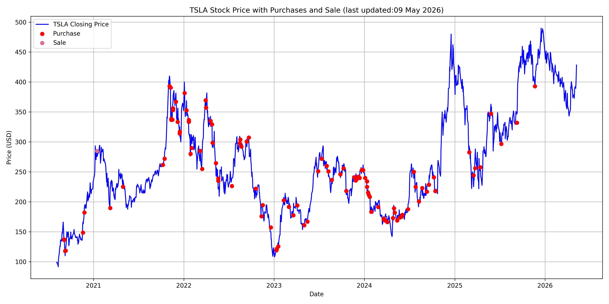

TSLA Purchase History
As of today, every single one of my TSLA purchases are in the green. It's been a long time coming. Obviously this is subject to change and we could even see a day where they are all in the red. The images below shows every single purchase and sale I have made of TSLA.
